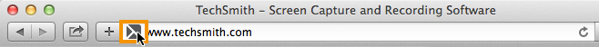

Capture an entire web page
Capture an entire web page
Snagit offers an alternative method to scrolling capture to quickly capture an entire web page.

Snagit offers an alternative method to scrolling capture to quickly capture an entire web page.
Drag the icon next to the URL from the address bar onto one of the following:

Snagit captures the entire web page including the area not visible in the current web browser window.